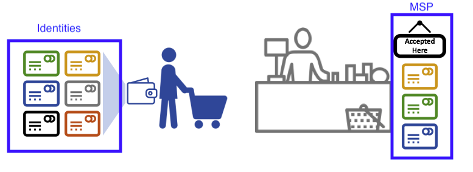
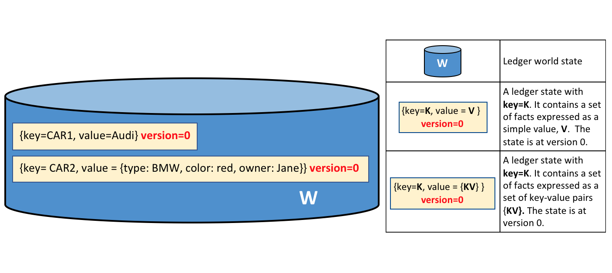
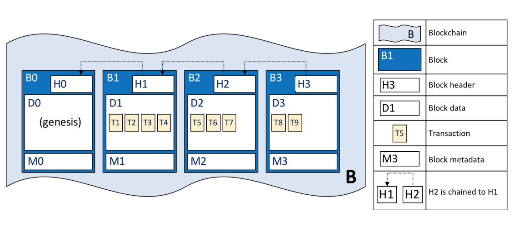
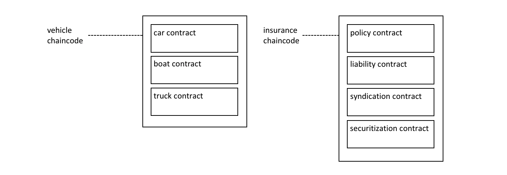
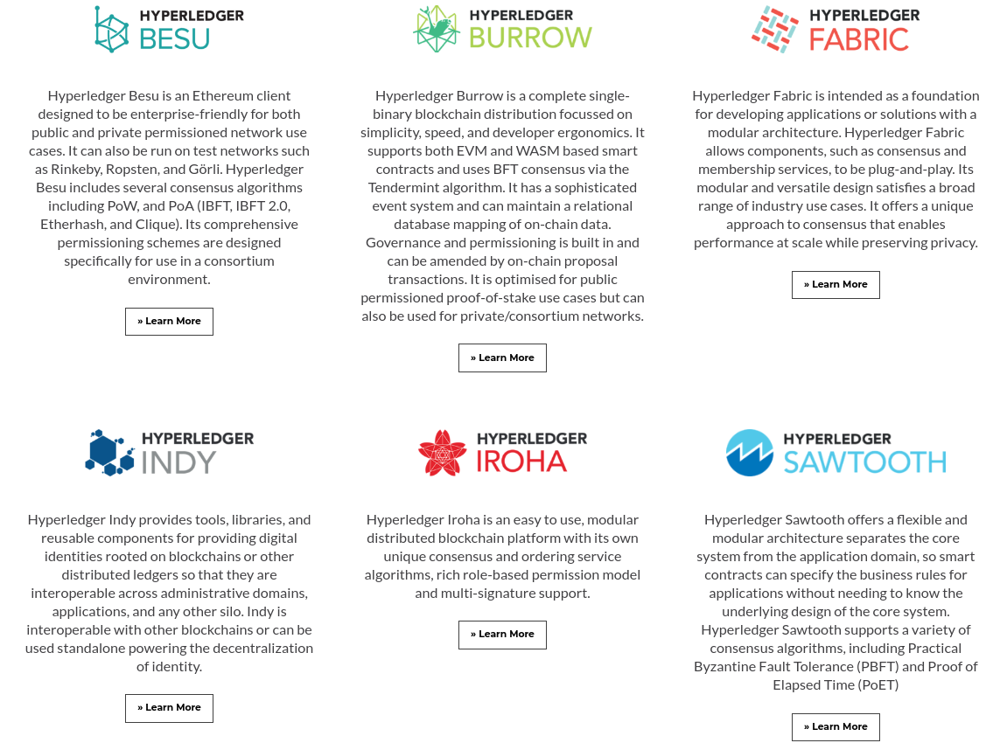
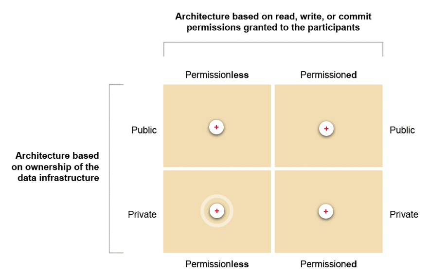

<!doctype html>
<html lang="en">
  <head>
    <meta charset="utf-8">

    <title>Public, private and consortium ledgers</title>

    <meta name="author" content="Dhruvin Parikh">

    <meta name="apple-mobile-web-app-capable" content="yes" />
    <meta name="apple-mobile-web-app-status-bar-style" content="black-translucent" />

    <meta name="viewport" content="width=device-width, initial-scale=1.0, maximum-scale=1.0, user-scalable=no, minimal-ui">

    <link rel="stylesheet" href="../../reveal.js/css/reveal.css">
    <link rel="stylesheet" href="../../reveal.js/css/theme/black.css" id="theme">

    <!-- Code syntax highlighting -->
    <link rel="stylesheet" href="../../reveal.js/lib/css/zenburn.css">

    <!-- Printing and PDF exports -->
    <script>
      var link = document.createElement( 'link' );
      link.rel = 'stylesheet';
      link.type = 'text/css';
      link.href = window.location.search.match( /print-pdf/gi ) ? '../../reveal.js/css/print/pdf.css' : '../../reveal.js/css/print/paper.css';
      document.getElementsByTagName( 'head' )[0].appendChild( link );
    </script>

    <!--[if lt IE 9]>
    <script src="../reveal.js/lib/js/html5shiv.js"></script>
    <![endif]-->

    <style>
      .reveal .slides h1, .reveal .slides h2, .reveal .slides h3 {
        text-transform: none;
      }

      .two-column {
        display: flex;
        flex-wrap: wrap;
      }

      .two-column em {
        margin: 20px;
      }

      .reveal .big-and-bold {
        font-weight: bold;
        font-size: 135%;
      }

      .reveal .shrunk-a-bit {
        font-size: 90%;
      }

      .reveal .shrunk-a-bit pre {
        width: 100%;
      }

      .reveal pre {
        width: 100%;
      }

      .reveal .highlight {
        color: yellow;
        font-weight: bold;
      }

      .reveal .highlightRed {
        color: red;
        font-weight: bold;
      }
    </style>
  </head>

  <body>
    <div class="reveal">
      <div class="slides">

<!------------------------------------------------------->


<section data-markdown><script type="text/template">

## CSBC 2000 - Essentials of Blockchain Development and Security

### Class 5: Public, private and consortium ledgers

*Dhruvin Parikh*

</script></section>

<section data-markdown><script type="text/template">

## So far

* Covered Blockchain Concepts 
* Block header, contents
* PoW, PoS, DLT
* P2P Networking
* Smart Contracts

</script></section>

<section data-markdown><script type="text/template">

## Going forward

* Restricted blockchains (public/private/consortium) 
* Hashing, Merkle trees
* The CIA triad
* Smart Contract security

</script></section>

<section data-markdown><script type="text/template">

## This Class

* Public, private, consortium ledgers 
* Hyperledger Fabric

</script></section>

<section data-markdown><script type="text/template">

## Public Blockchains

* Everything we have covered so far are public blockchains
* Anyone can read from them (except cryptonote – more on Thu) 
* Anyone can make a transaction to write (pending consensus)
* Open access state machine

</script></section>

<section data-markdown><script type="text/template">

## Private Blockchains

* At the other end of the spectrum, we have private blockchains
* Not everyone can read or write
* Multiple parties can exist in the network, but network control is asymmetric; some parties have higher control over the network
* They are also called permissioned blockchains as each stakeholder has a set of permissions associated with them

</script></section>

<section data-markdown><script type="text/template">

## Private Blockchains: HLF


</script></section>

<section data-markdown><script type="text/template">

## HLF State

* Assets: State variables; stored as k-v pairs
* Chaincode: state transitions within a channel (!= smart contract). Code that modifies the chain. Results in a set of k-v changes to submit to other peers and apply to the ledger

</script></section>

<section data-markdown><script type="text/template">

## HLF Consensus

* PoW/PoS probabilistic consensus: ledger consistency is achieved with a high probability
 * Transactions are ordered based on the miner fee, etc.
* HLF has a deterministic consensus; has an orderer node that determines next txs to be included in a block
* This way, execution and ordering of transactions are separated

</script></section>

<section data-markdown><script type="text/template">

## HLF Consensus

* There can be multiple ordering nodes, and they need to have the same order. Solved by Single-leader approach (recall dist. DBs) 
    * RAFT; PAXOS

</script></section>

<section data-markdown><script type="text/template">

## HLF: Channel

* Allow a group of participants to maintain a separate ledger 
 * The ledger exists in the scope of a channel
* Only participants belonging to a channel have copies of the channel ledger
* Can also be shared across all participants
* Allows corps to protect private interests
* Channels also allow for collections that let some members of a channel create a database within the ledger that only some corps can access

</script></section>

<section data-markdown><script type="text/template">

## HLF: Security/MSP

* Membership Service Provider
* Think of this as IAM roles in cloud except distributed
 * Various roles each with different stakeholders and levels of access
* Each Organization has an MSP



</script></section>

<section data-markdown><script type="text/template">

## HLF: Security/MSP

* (From Docs:) To transact on a Fabric network a member needs to: • Have an identity issued by a CA that is trusted by the network.
* Become a member of an organization that is recognized and approved by the network members. The MSP is how the identity is linked to the membership of an organization. Membership is achieved by adding the member’s public key (also known as certificate, signing cert, or signcert) to the organization’s MSP.


</script></section>

<section data-markdown><script type="text/template">

## HLF: Security/MSP

* Add the MSP to a channel.
* Ensure the MSP is included in the policy definitions on the network.


</script></section>

<section data-markdown><script type="text/template">

## HLF: Policies

* Policies define decision making structures in the HLF ecosystem
* Fabric policies represent how members come to agreement on accepting or rejecting changes to the network, a channel, or a smart contract

</script></section>

<section data-markdown><script type="text/template">

## HLF: Policies

* Policies are agreed to by the channel members when the channel is originally configured, but they can also be modified as the channel evolves. For example, they describe the criteria for adding or removing members from a channel, change how blocks are formed, or specify the number of organizations required to endorse a smart contract.

</script></section>

<section data-markdown><script type="text/template">

## HLF: World State

* Most up-to-date ledger state in a channel is stored as k-v pairs in a DB 
* Allows for complex queries to be made on ledger state
* Applications invoke a smart contract to access world state



</script></section>

<section data-markdown><script type="text/template">

## HLF: World State

* "Only transactions that are signed by the required set of endorsing organizations will result in an update to the world state"


</script></section>

<section data-markdown><script type="text/template">

## HLF: Blockchain

* Blockchain itself is a file that generates world state
* Each block has a link to the previous one's hash (as with all other blockchains)
* Block metadata created by ordering node + policy



</script></section>

<section data-markdown><script type="text/template">

## HLF: Smart Contract vs Chaincode

* Smart contract defines transaction logic that controls lifecycle of an asset in world state
* Smart contracts are packaged into chaincode and then deployed



</script></section>

<section data-markdown><script type="text/template">

## A Note on Hyperledger




</script></section>

<section data-markdown><script type="text/template">

## Permissioning



</script></section>

<section data-markdown><script type="text/template">

## Public Permissioned

* Anyone on the internet can access and write – if they have the right perms
* E.g Steem. Once joined, users can access services like [Steemit](https://steemit.com/communities).

</script></section>

<section data-markdown><script type="text/template">

## Private Permissionless

* Anyone can spin up a node to join
* However, unlike on a public blockchain, other nodes will only acknowledge its existence, but not share any data
* The smart contracts on these private networks, not only define who is allowed to perform contract actions but also who is allowed to read the contract and all related data

</script></section>

<section data-markdown><script type="text/template">

## Private Permissionless

* A single node holds multiple of ad-hoc chains, but never all of them
* E.g. Holochain, a platform for decentralized applications, where users share information peer-to-peer on a "need-to-know" basis

</script></section>

<section data-markdown><script type="text/template">

## Consortium Ledgers

* Consortium ledgers are a hybrid between private and public ledgers
* Differ from public blockchains as there is a hierarchy of nodes; not all nodes are involved in transaction validation
* Differ from private blockchains as they have multiple parties that control access to the ledger as opposed to just one party controlling the ledger

</script></section>

<section data-markdown><script type="text/template">

## Consortium Ledgers

* Consortiums typically have industry-wide applications whereas private ledgers are best suited to support a group of companies that require immutability and transparency in their dealings
* E.g. Hedera, Facebook, Diem (or at least Libra)

</script></section>

<section data-markdown><script type="text/template">

## References


</script></section>

<section data-markdown><script type="text/template">

## End of Class

</script></section>


<!------------------------------------------------------->


      </div>

    </div>

    <script src="../../reveal.js/lib/js/head.min.js"></script>
    <script src="../../reveal.js/js/reveal.js"></script>
    <script src="../../reveal.js/plugin/zoom-js/zoom.js"></script>

    <script>

      // Full list of configuration options available at:
      // https://github.com/hakimel/reveal.js#configuration
      Reveal.initialize({
        controls: true,
        progress: true,
        history: true,
        center: true,

        transition: 'none', // none/fade/slide/convex/concave/zoom

	math: {
          mathjax: '../lib/MathJax/MathJax.js',
          config: 'TeX-AMS_SVG-full',
	},

        // Optional reveal.js plugins
        dependencies: [
          { src: '../../reveal.js/plugin/markdown/marked.js', condition: function() { return !!document.querySelector( '[data-markdown]' ); } },
          { src: '../../reveal.js/plugin/markdown/markdown.js', condition: function() { return !!document.querySelector( '[data-markdown]' ); } },
          { src: '../../reveal.js/plugin/highlight/highlight.js', async: true, callback: function() { hljs.initHighlightingOnLoad(); } },
          { src: '../../reveal.js/plugin/math/math.js', async: true }
        ]
      });

    </script>

  </body>
</html>